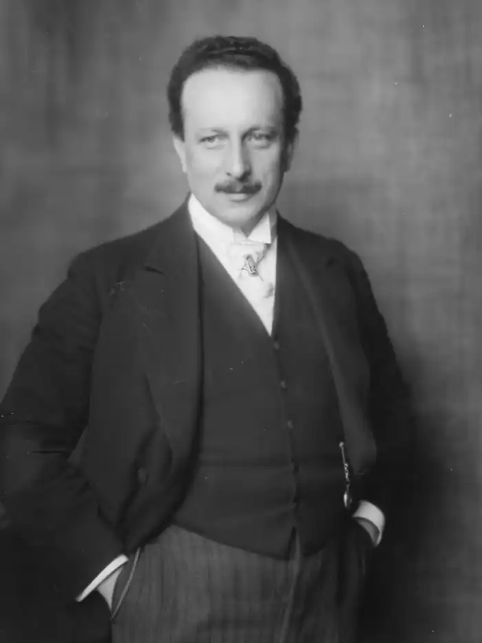

ЗАЛЬТЕН, Фелікс (Salten, Felix; автонім: Зальцман, Зигмунд — 06.09.1869, Будапешт — 8.10.1945, Цюріх) — австрійський письменник.Зальтен — автор цілого ряду романів, новел, драм, оповідань, статей, нарисів, проте найважливішою книжкою його життя стала невелика повість "Бембі". Майбутній письменник народився в Угорщині, а щоби здобути освіту, перебрався у Відень — столицю Австро-Угорської імперії. Через нестатки у сім'ї майбутній письменник не зміг здобути офіційної освіти, тому єдиним навчальним закладом Зальтена стала бібліотека. На прожиття він заробляв театральними рецензіями для віденських і берлінських газет і журналів, із часом заживши певної слави як авторитетний і дотепний журналіст.
У1938 р. емігрував до США, а невдовзі у Швейцарію. Зальтен увійшов у літературу як драматург, котрий зазнав впливу символістського театру М.Метерлінка, і водночас він не уникав натуралістичних сцен у драмі "Рядовий" (1899) та антимонархічній сатирі "Книга королів"(1905). Зальтен — автор збірок есе "Віденське дворянство" (1905) та "Австрійський обмін" (1809). Зальтен глибоко хвилює проблема деградації людини під тиском цивілізації, шкідливого впливу технічного прогресу на душу людини і природу, між якими, на думку Зальтена, існує нерозривна духовна спорідненість. Серйозна стурбованість подальшою долею існування людини в умовах буржуазного суспільства відчувається у реалістичних творах 3.: "Маленька Вероніка" (1910), романах "Ольга Фрогемут" (1910), "Дзвенить дзвоник" (1914), у драмах "З другого берега" (1908), "Діти радості" (1916). Гостре переживання "болю" живої природи, що страждає під гнітом механічної цивілізації, виснаженої бездушним ставленням до неї людини, надихнуло Зальтена на написання "зоологічних романів" ("Флорентійський пес", 1912 та ін.). Однак справжньої літературної слави Зальтен зажив як автор "лісових" повістей для дітей і юнацтва ("Дванадцять зайців", "Бембі", 1923).
Казка "Бембі" ("Bambi") розкриває перед читачем життя лісових мешканців у його суперечливій різноманітності. З одного боку, ліс сповнений масою див, незбагненних для розуму; різнобарв'я галявини, візерунок на крилах метелика, таємнича мова звірів і птахів створюють перед читачем світ, здавалося б, ідеальний, але, з іншого боку, світ "Бембі" існує за суворими законами боротьби. Враження першого дня щойно народженого оленятка Бембі — вбивство миші тхором, бійка яструбів за їжу, страх і жорстокість лісових мешканців. Але такий незмінний триб життя лісу, він звичний для героїв казки. Бембі з ним примиряється, але не звикає до нього. Доброта, шляхетність і співчуття — якості, притаманні йому і його роду. Справжньою проблемою в житті лісу є постійна незрима присутність людини. Людина у казці наводить жах. "Вона" — безіменна — розставляє незчисленні пастки та сильця, від її смертоносної зброї та вишколених зрадників-собак неможливо сховатися. Страх і покора спотворюють душі героїв казки. "Страшне не вбивство, — скаже старий олень, батько Бембі, дивлячись на розтерзану переконаним у своїй правоті псом лисицю, — страшна віра в те, що говорила собака. Вони [лісові мешканці] вірять у її всемогутність і живуть у постійному страху. Вони ненавидять її та зневажають себе... і мовчки приймають загибель від її руки!" Зальтен переконаний у можливості розумного спілкування з живою природою, хоча "Вона" в казці показана лише суто як носій лихої, руйнівної, фатальної стихії. Спроба "дружби" "її" та дітей лісу приречена на трагічну невдачу. Людина дала прихисток оленяткові Гобо — діти гралися з твариною, привчаючи її до добра та ласки, — але, зустрівшись у лісі з людиною, довірливий і беззахисний Гобо стає її жертвою — "Вона" не впізнала Гобо. Те, що контакт людини і природи не показаний у книзі, не свідчить про його неможливість. Книга прагне спонукати читача до пошуку шляхів досягнення такого контакту. Справжній мисливець повинен бути добрим, повинен знати, як своє, рідне, життя природи, ліс, поле, болото, озеро. Браконьєрство — це наруга над життям, це зневага мудрих законів, що керують життям природи; браконьєрство — це найгірший вид паразитизму; людина хоче малою ціною, а то й узагалі безкоштовно взяти те, за що слід платити зусиллям, боротьбою, іноді — подвигом. Книга Зальтена показує, що ліс готовий прийняти доброту людини, якщо це істинна доброта, котра поширюється на всіх його мешканців, а не порожня сентиментальність — блакитний бантик на шиї прирученого оленятка. "Закон життя — це боротьба", — скаже у фіналі казки змужнілий Бембі. Але розуміння цього закону не робить Бембі жорстоким — його серце назавжди зостанеться відкритим для добра. Книга Зальтена та її герої здобули всесвітню славу, вона перекладена чи не всіма мовами світу. У 1942 р. американський художник В. Дісней поставив мультиплікаційний фільм "Бембі". У 1945 р. у Швейцарії було проведено конкурс ім. "Бембі" на краще оповідання з життя тварин, був встановлений навіть футбольний приз ім. "Бембі". Книга викликає пильне зацікавлення художників і педагогів, існує кілька театральних інсценізацій "Бембі".